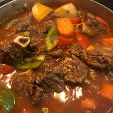

Kalderetang Baka

Description:
Kalderetang Baka, also known as Beef Caldereta, is a traditional Filipino dish made with tender beef, potatoes, and carrots stewed in a rich tomato-liver sauce. The dish is characterized by its distinctive flavor achieved through the use of liver spread, which adds a rich, earthy taste. The name "Kalderetang" comes from the Spanish word "caldera," meaning cauldron, reflecting the large pot traditionally used for cooking this dish. The preparation involves simmering the beef with aromatic vegetables and a tomato base, resulting in a hearty and satisfying meal that is often enjoyed during family gatherings and special occasions.
Ingredients:
- 1kg of beef (brikset or chuck, cut into cubes)
- two medium potatoes, cube
- two large carrots, cube
- one red and one green bell pepper, sliced
- one cup of tomato sauce
- ½ cup liver spread (Reno brand is common)
- 3-4 cloves of garlic, minced
- one medium onin chopped
- three bay leaves
- two cups beef broth or water
- ½ cup green olives (optional)
- one tsp chilli flakes or siling haba (optional for spicy)
- salt and pepper for taste
- cooking oil
Steps:
- Prep veggies - Pan-fry potatoes and carrots until lightly browned. Set aside.
- Sauté aromatics - In the same pot, sauté garlic and onion until fragrant.
- Brown beef - Add beef cubes, cook until lightly browned.
- Build sauce - Pour tomato sauce, paste, and broth. Add bay leaves.
Simmer until beef is tender (1.5–2 hrs; 30 mins if using pressure cooker).
- Flavor boost - Stir in liver spread, olives, and chili flakes. Simmer 10 mins.
- Finish - Add bell peppers and fried vegetables. Cook for 5 mins.
- Serve with hot steamed rice
Home